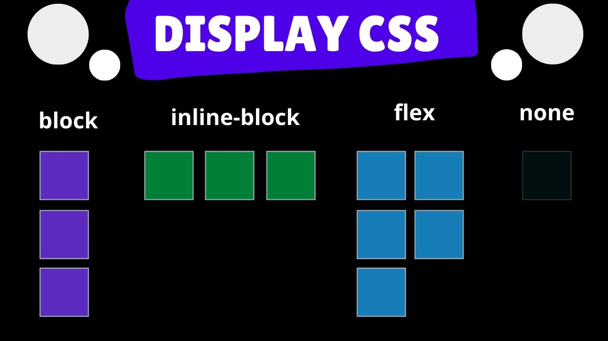

✪ CSS Layout & Positioning
This topic could cover how to use CSS to control the layout and positioning of HTML elements on a webpage, including techniques such as floats, flexbox, grid, and positioning

★ CSS Layout & Positioning
- ➤ CSS Layout:
- ➢ CSS layout refers to how elements are positioned and arranged on a
web page.
- ➢
There are several types of layout in CSS, including:
- ➣
Normal flow
- ➣
Flexbox
- ➣
Grid
- ➣
Floats
- ➤ Normal Flow:
- ➢
The default layout mode in CSS is normal flow.
- ➢
In normal flow, elements are placed on the page in the order they appear in the HTML markup.
- ➢
Elements will take up the full width of their parent container by default, unless their width or
height is explicitly set.
- ➤ Flexbox:
- ➢
Flexbox is a layout mode in CSS that allows for more flexible and responsive layouts.
- ➢
It allows elements to be arranged in rows or columns, and can be used to create complex layouts with
relative ease.
- ➢
Flexbox works by setting a container element to display:flex and then using various flex properties to
control the layout of its children.
- ➤ Grid:
- ➢
Grid is a layout mode in CSS that allows for even more control over the positioning and arrangement of
elements on a page.
- ➢
Grid works by setting a container element to display:grid and then defining rows and columns using the
grid-template-rows and grid-template-columns properties.
- ➢ Grid also offers a range of other properties for controlling the
size and positioning of grid items.
- ➤ Floats:
- ➢
Floats are a legacy layout technique in CSS that are still commonly used today.
- ➢
They work by allowing an element to be taken out of the normal flow of the document and positioned to the left or right of its parent container.
- ➢
Floats can be used to create multi-column layouts, but they can also be tricky to work with and may cause issues with other elements on the page.
- ➤ CSS Positioning:
- ➢
CSS positioning refers to the way elements are positioned relative to their parent container or to the viewport.
There are several types of positioning in CSS, including:
- ➣
Static
- ➣
Relative
- ➣
Absolute
- ➣
Fixed
- ➤ Static Positioning:
- ➢
Static positioning is the default position value in CSS.
- ➢
In static positioning, elements are positioned in the normal flow of the document and cannot be moved or positioned using top, bottom, left, or right properties.
- ➤ Relative Positioning:
- ➢
Relative positioning allows elements to be moved relative to their normal position in the document flow.
- ➢
When an element is set to position:relative, it can be moved using top, bottom, left, or right properties.
- ➤ Absolute Positioning:
- ➢
Absolute positioning allows elements to be positioned absolutely within their parent container or the viewport.
- ➢
When an element is set to position:absolute, it is positioned relative to its nearest positioned ancestor element or to the viewport if no positioned ancestor exists.
- ➢
Absolute positioning is commonly used for creating overlays or pop-ups.
- ➤ Fixed Positioning:
- ➢
Fixed positioning allows elements to be positioned relative to the viewport, so that they remain fixed in place even as the user scrolls the page.
- ➢
When an element is set to position:fixed, it is positioned relative to the viewport and can be moved using top, bottom, left, or right properties.
- ➤ Display Property: The display property determines how an element is
displayed on a web page. Some common display values are block, inline, inline-block, and flex.
- ➤ Position Property: The position property determines how an element is
positioned on a web page. Some common position values are static, relative, absolute, and fixed.
- ➤ Float Property: The float property allows elements to be floated to
the left or right of other elements. This is commonly used for creating multi-column layouts.
- ➤ Box Sizing Property: The box-sizing property determines how the width
and height of an element is calculated. The default value is content-box, which includes only the content
area in the width and height calculation. However, setting the value to border-box includes the padding
and border in the width and height calculation.
- ➤ Flexbox: Flexbox is a powerful layout system in CSS that allows
elements to be arranged in a flexible and responsive manner. It consists of a container and its children,
which can be flex items.
- ➤ Grid: CSS Grid is another powerful layout system in CSS that allows
for two-dimensional layouts. It consists of a grid container and grid items.
- ➤ Positioning: Positioning is an important aspect of CSS layout, and it
involves determining the position of an element on a web page. Absolute positioning allows an element to
be positioned relative to its nearest positioned ancestor, while fixed positioning allows an element to be
positioned relative to the viewport.
- ➤ CSS has a variety of units of measurement, including pixels, ems,
rems, percentages, and more.
- ➤ Finally, CSS has many advanced features, such as media queries,
animations, and responsive design, which allow you to create beautiful and responsive web designs.